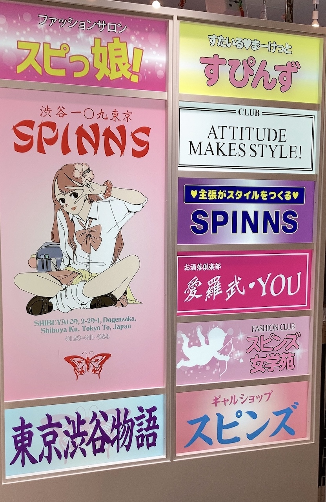
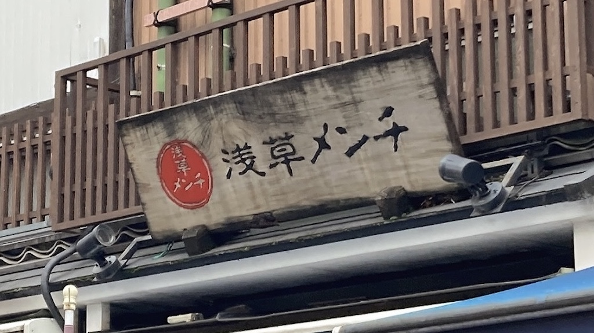
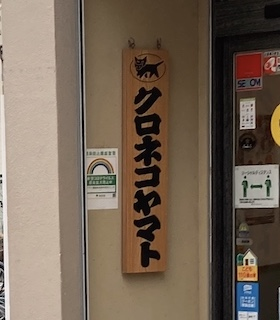

写真１

服のブランドの看板。今の流行りに合わせた服を売っていて人気のブランドなのに、看板の配置が昭和っぽい
デザインになっている。だけど色合いとかがブランドのターゲット層であろう若い女の子が好みそうな色合いに
なっているのでミスマッチもおきていないと思う。
写真２

書いている内容的にはそこまでレトロでもない（外観が一昔前みたいなのに比べると）のに看板のデザインで古っぽく
なっていると思う。あとなんでこんな怖い感じにしたのかなと思った。
写真３

大手の会社で馴染みの文字なのにデザインが周りの外観に合わせて和風だった。京都とかでよくあるって聞いてた
ので近いところにもあってびっくりした。宅急便なのに相撲部屋みたいな看板だなと思った。たしか近くに普通の
看板もあったので結局外観からは浮いてた。